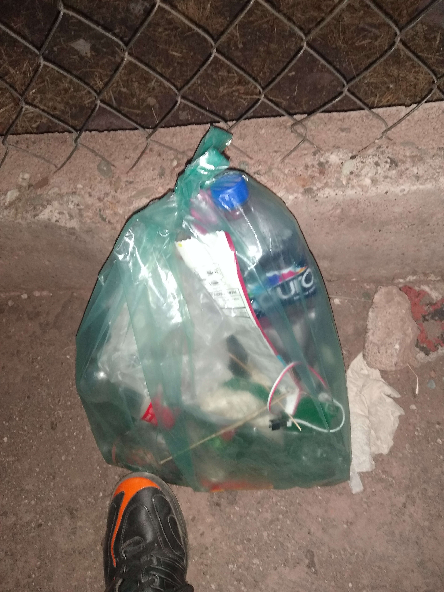
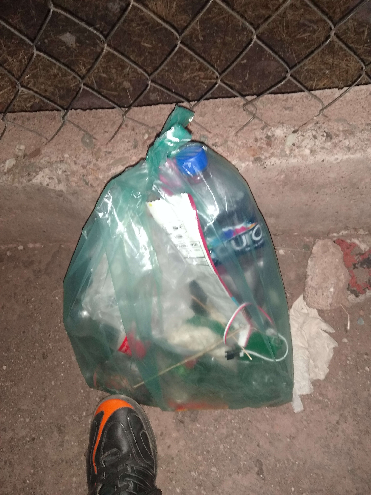
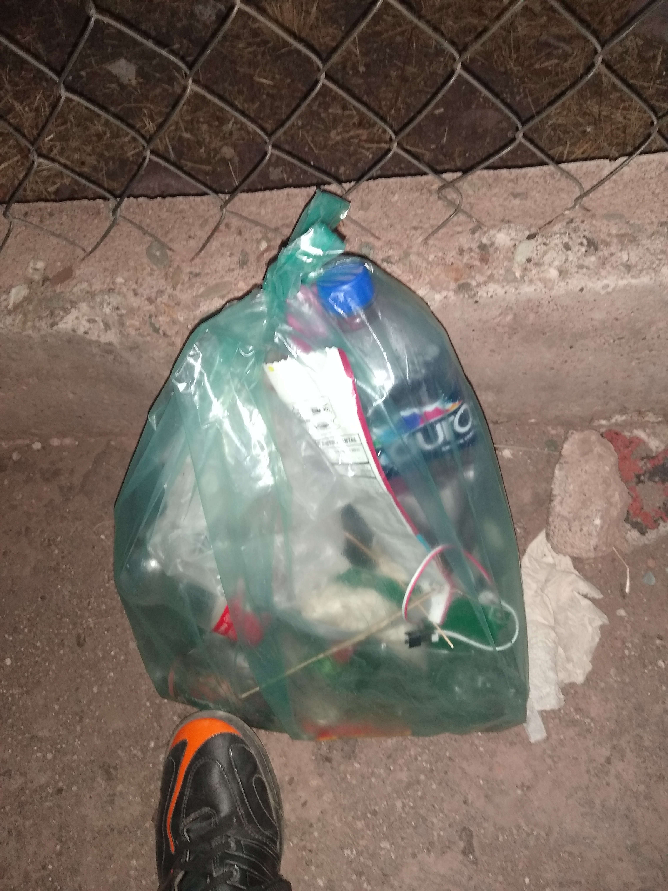

En Gto capital el cerro de la Bufa y el cerro denominado "De la cruzita" son montañas sumamente visitadas, en especial la primera que inclusive es un atractivo turístico, por ende, la basura que existe en estas zonas es abundante. Sumado a esto según la (INER) el 16% de la población mexicana fuma y el 35% de la basura en estas zonas son colillas de cigarro sin mencionar que una sola colilla contamina a 50 litros de agua. Por otro lado, la inexperiencia de la gente a la naturaleza provoca accidentes y muchos destrozos hacia esta, pues muchas personas por querer una buena fotografía aplastan, lastiman y/o matan a la flora y fauna.
El mundo natural, aunque es hermoso, es fragil, necesitamos como sociedad hacer conciencia, todos queremos hacer ejercicio al aire libre y queremos que este limpia la zona, Pero ¿Que hacemos para que este limpia? La tierra no se ensucia sola por ende...
Las rutas planeadas estrategicamente tienen como fin el no alterar la flora y fauna, usando caminos ya hechos como lo son las terrazerias o rutas hechas en grupo y con expertos, pero ¿La experiencia de aventurarte? Claro que podremos aventurarnos, para esto...
Lamentablemente existe mucha gente que sube a las montañas y tira basura en cualquier parte por ende, las capañas de recolección nos haran llegar a muchas zonas increibles, mientras estaremos limpiando y cuidando el bioma, esto nos llevaría a...